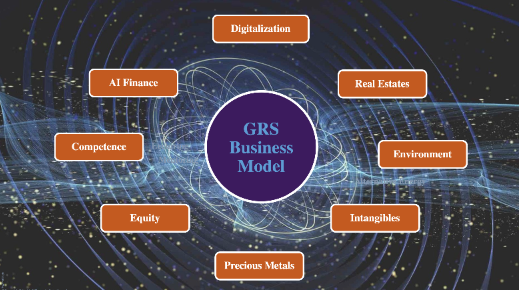

Making Profit for Doing Good
Power of Sight International is offering a universal toolkit for societal innovation and a decision-making support system for probably the biggest shift in human history. Power of Sight’s portfolio is a diversity of tangible and intangible products, services and assets realizes the constant dynamic flow between volatile and unpredictable markets securing flexibility, adaptability and a solid capital reserve for global expansion, future revenues and necessary support of future pioneers.
A Global Caring Economy
